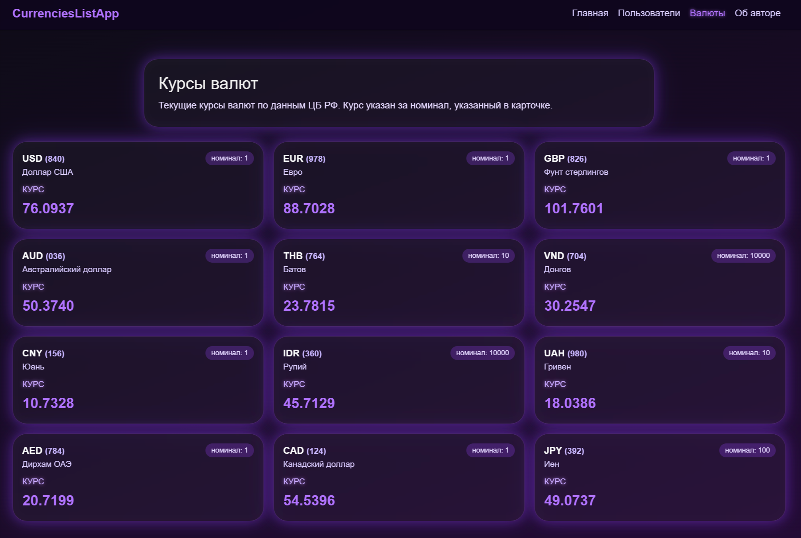
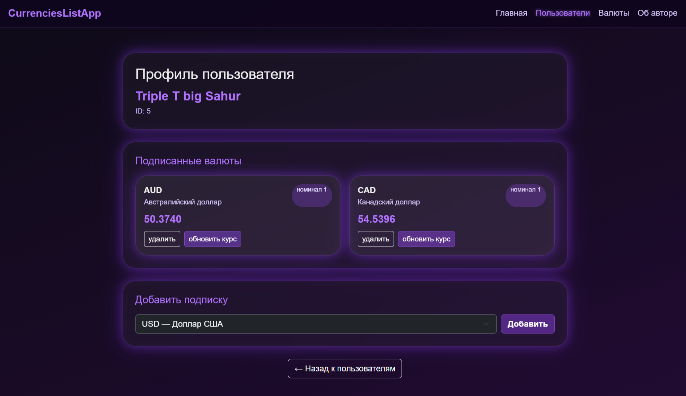
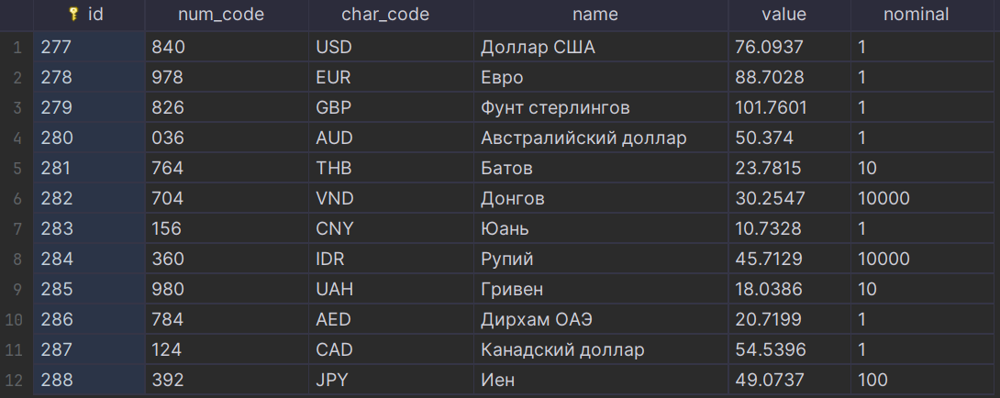
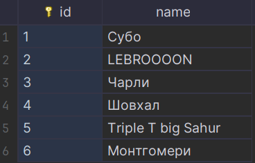
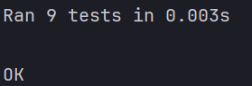

CRUD для приложения отслеживания курсов валют c SQLite базой данных
1. Цель работы
- Реализовать CRUD (Create, Read, Update, Delete) для сущностей бизнес-логики приложения.
- Освоить работу с SQLite (режим in-memory и файл).
- Понять принципы первичных и внешних ключей и их роль в связях между таблицами.
- Выделить контроллеры для работы с БД и для рендеринга страниц в отдельные модули.
- Использовать архитектуру MVC и соблюдать разделение ответственности.
- Отображать пользователям таблицу с валютами, на которые они подписаны.
- Реализовать полноценный роутер, который обрабатывает GET-запросы и выполняет сохранение/обновление данных и рендеринг страниц.
- Научиться тестировать функционал на примере сущностей currency и user с использованием unittest.mock.
2. Описание моделей, их свойств и связей
2.1. User
| Поле | Тип | Описание |
|---|---|---|
id |
int | Первичный ключ |
name |
str | Имя пользователя |
Валидация:
- ID > 0
- Имя ≥ 2 символов
Связь: User (1) — (N) UserCurrency
2.2. Currency
| Поле | Тип | Описание |
|---|---|---|
id |
int | Primary Key |
num_code |
str | Числовой код валюты |
char_code |
str | Символьный код (USD, EUR…) |
name |
str | Название валюты |
value |
float | Текущий курс |
nominal |
int | Номинал |
Валидация:
- курс > 0
- номинал > 0
- символьный код длиной 2–5 символов
2.3. UserCurrency
Таблица связи многие-ко-многим.
CREATE TABLE user_currency (
id INTEGER PRIMARY KEY AUTOINCREMENT,
user_id INTEGER NOT NULL,
currency_id INTEGER NOT NULL,
FOREIGN KEY (user_id) REFERENCES user(id),
FOREIGN KEY (currency_id) REFERENCES currency(id)
);
3. Структура проекта с назначением файлов
lab_9/
│
├── controllers/
│ ├── currencycontroller.py # бизнес-логика валют
│ ├── databasecontroller.py # CRUD + SQL
│ └── __init__.py
│
├── models/
│ ├── user.py # модель User
│ ├── currency.py # модель Currency
│ ├── user_currency.py # модель связи
│ ├── author.py # информация об авторе
│ ├── app.py # модель приложения
│ └── __init__.py
│
├── templates/
│ ├── index.html # главная страница
│ ├── users.html # список пользователей
│ ├── user.html # профиль пользователя
│ ├── currencies.html # таблица валют
│ ├── author.html # информация об авторе
│
├── utils/
│ └── currencies_api.py # получение курсов валют с API
│
├── tests/
│ ├── test_currency_model.py
│ ├── test_user_model.py
│ ├── test_currency_controller.py
│
├── currency.db # база SQLite
└── myapp.py # веб-сервер и маршрутизация
4. Реализация CRUD с примерами SQL-запросов
4.1. CREATE
INSERT INTO currency (num_code, char_code, name, value, nominal)
VALUES (?, ?, ?, ?, ?);
Python:
cursor.execute(sql, (
currency.num_code,
currency.char_code,
currency.name,
currency.value,
currency.nominal
))
4.2. READ
Все валюты:
SELECT * FROM currency;
По char_code:
SELECT * FROM currency WHERE char_code = ?;
4.3. UPDATE
UPDATE currency SET value = ? WHERE char_code = ?;
4.4. DELETE
DELETE FROM currency WHERE id = ?;
5. Скриншоты работы приложения
5.1. Главная страница ( / )

5.2. Таблица валют ( /currencies )

5.3. Профиль пользователя ( /user?id=1 )

*5.4. Пример Баз данных:


6. Примеры тестов с unittest.mock и результаты их выполнения
✔ Тест модели Currency
def test_invalid_value_raises(self):
with self.assertRaises(ValueError):
Currency(currency_id=1, char_code="USD", value=-5, nominal=1)
✔ Тест модели User
def test_invalid_name(self):
with self.assertRaises(ValueError):
User(user_id=1, name="A")
✔ Тест контроллера с mock БД
def test_list_currencies(self):
mock_db = MagicMock()
mock_db.read_all.return_value = [{"id": 1, "char_code": "USD"}]
controller = CurrencyController(mock_db)
result = controller.list_currencies()
assert result[0]["char_code"] == "USD"
mock_db.read_all.assert_called_once()
✔ Пример вывода:

7. Выводы о применении MVC, работе с SQLite, обработке маршрутов и рендеринге шаблонов
-
В работе реализована полноценная архитектура MVC:
-
Модели отвечают за данные и валидацию.
- Контроллеры выполняют обработку действий и CRUD с SQLite.
- Представления (Views) рендерятся через Jinja2.
-
Router (myapp.py) обрабатывает GET-маршруты.
-
SQLite позволила создать надёжную, связную структуру таблиц с внешними ключами.
-
CRUD для Currency успешно реализован и протестирован.
-
Реализована страница профиля пользователя, на которой отображаются подписки (many-to-many).
-
Система маршрутизации обрабатывает:
-
вывод валют
- обновление
- удаление
- отображение профиля
-
добавление/удаление подписок
-
Тестирование с
unittest.mockпозволило изолировать бизнес-логику и полностью покрыть контроллеры без обращения к базе данных. -
Приложение полностью соответствует требованиям: форматы, типы, PEP-8, PEP-257, MVC, маршруты, тесты, CRUD.